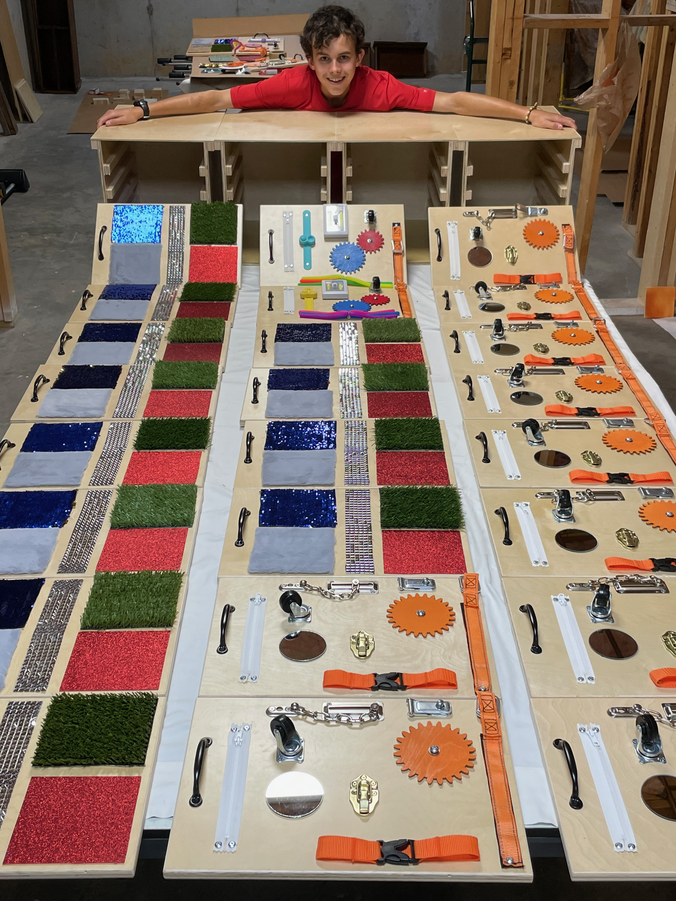
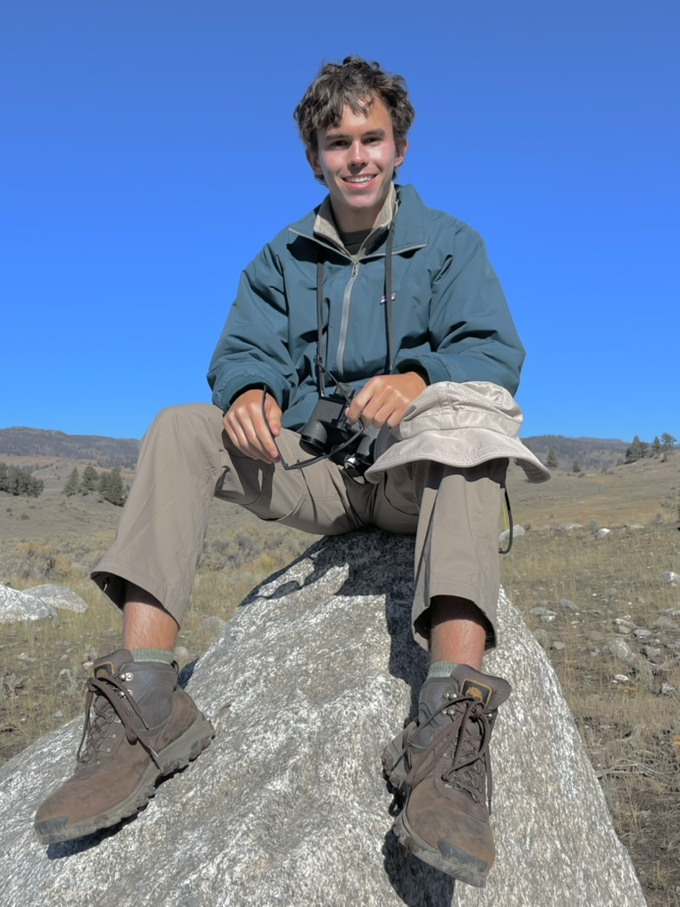

Lithium-Ion Battery Remaining Useful Life (RUL) Prognostics & Telemetry Node
Real-time battery voltage and current data sampling using an STM32 Nucleo board.
Lorem
Georgia Tech electrical engineering student with hardware prototyping and applied machine learning experience. Proficient in pipeline development from diverse data streams. Eagle Scout with ample project management, public speaking, and leadership experience. Seeking an internship for Summer 2027 in hardware engineering and machine learning.
View My WorkReal-time battery voltage and current data sampling using an STM32 Nucleo board.
Lorem
End-to-end Python machine learning pipeline predicting lithium-ion aging parameters based on derived voltage and temperature features.
This project develops an end-to-end machine learning pipeline to predict the remaining useful life (RUL) of lithium-ion batteries using their initial discharge characteristics. Using the NASA Randomized Battery Usage Dataset, which contains time-series measurements of lithium-ion batteries subjected to randomized charging and discharging cycles, the project investigates how early-cycle electrical and thermal behavior can reveal battery degradation and predict remaining capacity.
The pipeline begins by extracting features from the first five minutes of reference-cycle discharge measurements. These features include cycle count, ohmic internal resistance, dynamic voltage sag, energy discharged in watt-hours, and maximum temperature reached. Together, these measurements capture changes in electrical performance and thermal behavior as batteries age. The prediction target is the total watt-hours discharged over an entire drainage period, serving as a measure of the battery's remaining useful capacity and, consequently, its remaining useful life.
After feature extraction, the data is standardized and used to train a Random Forest Regressor to estimate remaining useful life. Model performance is evaluated by comparing predictions against actual battery discharge measurements, including validation against a real battery drainage test. This provides an opportunity to assess how well a model trained on historical battery cycling data generalizes to real-world measurements.
Beyond predictive accuracy, the project uses SHAP (SHapley Additive exPlanations) analysis to investigate the relative importance of individual features and their contributions to model predictions. Particular attention is given to the relationship between early-discharge energy measurements and remaining battery capacity, as well as potential multicollinearity among the extracted features.
The ultimate goal is to determine how accurately a battery's remaining useful life can be estimated from just its initial discharge behavior, identify which measurements provide the most predictive information, and evaluate whether a smaller subset of features can achieve comparable accuracy without introducing unnecessary model complexity.
I'm an electrical engineering undergraduate at Georgia Tech pairing signal processing and AI with robotics and autonomous systems. I'm focused on gaining experience with embedded microcontrollers such as STM32 and implementing on-device AI. In the future, I'd like to learn more about FPGA programming. I hold an FCC Technician Class Ham Radio License. I have experience working with premier Python data science libraries, including Pandas, NumPy, Scikit-learn, and Tensorflow, and I've constructed full machine learning pipelines for various kinds of data streams, including high-dimensional tabular data and timeseries data. I'm also familiar with C and Java. I'm seeking an internship for Summer 2027 in hardware engineering and machine learning.
I'm an Eagle Scout and I have a breadth of experience in project management, public speaking, and mentorship. For my Eagle Scout project, I benefited 50+ seniors with dementia and children with special needs by leading over a dozen volunteers in constructing 24 custom-made physical therapy lapboards and accompanying shelving units.

I serve as the assistant Freshman social chair at my fraternity, where I've coordinated 3 multi-organization events for a 30-person member class, managing logistics, preparation, and activity execution. I delivered engaging programming, such as structured dance lessons and interactive performance competitions resulting in peak turnouts of 60+ participants. I enjoy public speaking, and I'm especially proud of my high school graduation speech where I spoke to an audience of over 3,000 attendees.
One of my favorite things to do is mentoring younger members of the organizations I'm a part of. I've spent dozens of days mentoring younger Scouts during camping, backpacking, and hiking trips. I also tutored younger students independently and through my school in geometry, chemistry, and physics.

In my spare time, I enjoy swimming, hiking, and playing pickleball. Soon, I'd like to prioritize more consistently practicing piano and guitar. I love learning about how things work, and one subject I find especially fascinating is music theory. Also, I'm always looking to learn new swing dancing moves!
This copy of my resume does not contain personal information as it's posted publicly online. Please email me to receive a more tailored version with my personal information.